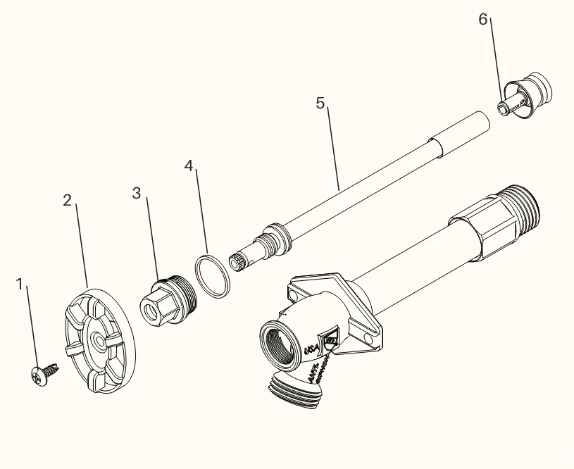

Outdoor Faucet Types
Outdoor faucets are commonly called hydrants. If they are frost-proof, they are called frost-free or frost-proof hydrants.
Faucet Parts Identification
Here are the main components of outdoor faucets and their English names:

Diagram showing the main components of outdoor faucets with numbered parts
Main Faucet Components
-
1Stainless ScrewThe main screw that holds the faucet together
-
2Oval HandleThe handle you turn to control water flow
-
3-6Stem AssemblyComplete assembly unit (parts 3-6) usually sold together
-
6Spring-less Check AssemblyPart 6 can also be sold separately
-
OO-RingRubber seal on part 6, some can be replaced
Repair Tips
- Most outdoor faucet repairs involve replacing the stem assembly (parts 3-6)
- Check the O-ring for wear and replace if necessary
- Use stainless steel screws to prevent rust
- For frost-free hydrants, ensure proper winterization
Common Leak Issues
Most outdoor faucet leaks are caused by:
- Worn O-rings that need replacement
- Damaged stem assembly
- Loose or corroded screws
- Improper winterization causing freeze damage
Professional Service
Need help with your outdoor faucet repair? Our experienced Seattle handyman team can help with all types of faucet maintenance and replacement. Contact us for a free quote!
Get Free Quote